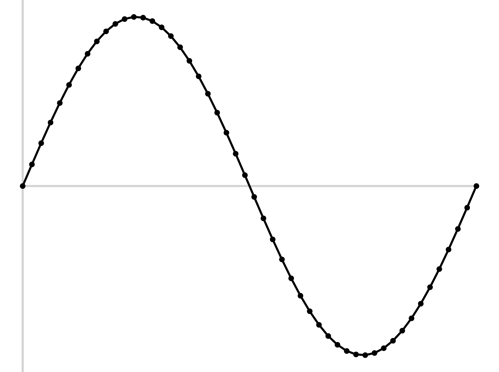
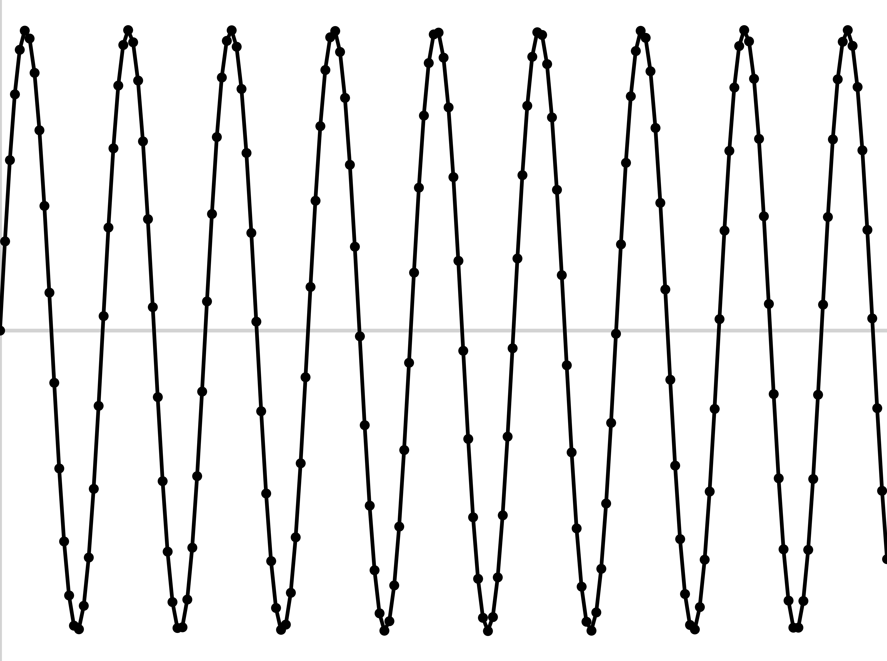

### The First Audio Recording <audio controls src="phonmedia/edison_lostchord.mp3"></audio> --- ### A440 (Move around the room to hear nodes and antinodes) <audio controls src="phonmedia/440A_fiveminutes.mp3"></audio> --- ### A220 (Move around the room to hear nodes and antinodes) <audio controls src="phonmedia/220A_fiveminutes.mp3"></audio> --- # Digital Sound and Sampling ### Will Styler - LIGN 168 --- ### Where are we! <img class='r-stretch' src='diagrams/speech_processing_pipeline.jpg'> --- ### Today's Plan - Capturing Pressure variations - Computer Audio, Sampling, and Quantization --- ### Sound is compression and rarefaction in a medium <img class="r-stretch" src="phonmedia/sound_diagram.jpg"> --- ### Timeshifted sound is a novelty - For most of our species history, this wasn't a thing - *How do we capture and recreate the pattern of sound pressure?* --- ### Analog Recording - "Let's capture the pressure pattern in a physical medium" --- ### The Phonograph - Air pressure pushes a stylus into very soft wax cylinder <img class="r-stretch" src="phonmedia/phonograph.jpg"> --- ### Playback from Phonographs - Put a stylus on a membrane into the groove, and let it 'trace the wave' <img class="r-stretch" src="phonmedia/phonograph2.jpg"> --- ### These recordings are ephemeral and bad - The stylus wears away the groove - The power of the air pressure limited the strength of the medium 'The Lost Chord' by Arthur Sullivan (1888) <audio controls src="phonmedia/edison_lostchord.mp3"></audio> --- ### There's an inherent tradeoff - You want a soft medium for capture - ... and a hard medium for playback - Air pressure only provides so much power --- <img class="r-stretch" src="phonmedia/conerecording.jpg"> --- ### Electric Recording fixes this! - Electrical signals are easy to amplify - ... and easier to store --- ### Microphones - A Microphone *transduces air pressure patterns into electrical patterns* - 'Give me a pattern of voltage that matches the pattern of compression and rarefaction' <img class="r-stretch" src="phonmedia/sound_diagram.jpg"> --- ### Dynamic Microphones - Air pressure pushes a membrane, moving a coil of wire around a magnet, inducing voltage - Durable, but less sensitive <img class="r-stretch" src="phonmedia/mic_dynamic.jpg"> --- ### There are many other kinds of microphones! - We can nerd out about this in office hours! --- ### Now you have sound as a voltage on an electrical line - You can amplify it, transmit it, modify it and store it - You can even recreate the air pressure movements --- ### Amplification - "When this signal gets stronger, make this other one stronger still" - "Increase the voltage of this signal and send it down the line" - This can be done in many ways, but it's (relatively) easy and doesn't require computers --- ### Speakers - Dynamic microphones in reverse - Changes in voltage move a membrane attached to a coil - This 'kicks' the air in the desired pattern of compression --- ### There are many types of speakers, some are different! <img class="r-stretch" src="phonmedia/speakers.jpg"> --- ## Any Questions so far? --- ### So, that's how we capture sound - ... and that's how we worked with sound for a good while! --- ### There are other *analog* ways to store sound - Magnetic field strength on tapes - [Optical Audio Storage on Film](https://www.youtube.com/watch?v=tg--L9TKL0I) - ... and more! --- ### But then everything changed --- ## Computer Audio --- ### Computers don't do waves <img class="r-stretch" src="phonmedia/sampling_raw.jpg"> 010001110010101000100101101010101010 --- ### Sound is analog, computers are digital - How do we deal with that? --- ### Quantization - Also known as 'digitization', 'discretization', or 'sampling' - "Let's just measure the sound a LOT and store those values" --- ### Quantization <img class="r-stretch" src="diagrams/sampling_perfectwave.png"> --- ### Quantization  --- ### Quantization <img class="r-stretch" src="diagrams/sampling_withlines.png"> --- ### Quantization <img class="r-stretch" src="diagrams/sampling_justlines.png"> --- ### Analog-to-digital conversion - Sample the wave many times per second - Record the amplitude at each sample - The resulting wave will faithfully capture the signal --- ### How often do we sample? - This is called the 'Sampling Rate' - Measured in samples per second (Hz) - **This is the same question as 'how often do I collect data from my population?'** --- ### Sampling Rate --- ### Sampling Rate (low rate) <img class="r-stretch" src="diagrams/sampling_lowrate.png"> --- ### Sampling Rate (low rate) <img class="r-stretch" src="diagrams/sampling_lowratejustlines.png"> --- ### Sampling Rate (lower rate) <img class="r-stretch" src="diagrams/sampling_verylow.png"> --- ### Sampling Rate (lower rate) <img class="r-stretch" src="diagrams/sampling_verylow2.png"> --- ### Bad sampling makes for bad waves <img class="r-stretch" src="phonmedia/sampling_undersampled.jpg"> --- ### Good sampling rates capture the necessary set of frequencies --- ### Good sampling rates capture the necessary set of frequencies <img class="r-stretch" src="diagrams/sampling_clip_orig.png"> --- ### Higher frequencies need higher sampling rates  --- ### Higher frequencies need higher sampling rates <img class="r-stretch" src="diagrams/sampling_sampled_ultrahifreq.png"> --- ## Nyquist Theorem The highest frequency captured by a sample signal is one half the sampling rate --- ### The Nyquist Theorem is beautiful and motivational - Perfect capture of the wave isn't possible (in a digital space) - ... but as long as you know your goal, you can capture it mathematically good enough - **Don't try to sample perfectly, just know your frequency range and nyquist it!** --- ### Sampling Rates (Shpongle - 'Nothing is something worth doing') 44,100 Hz <audio controls src="phonmedia/nothingsomething44100.wav"></audio> 22,050 Hz <audio controls src="phonmedia/nothingsomething22050.wav"></audio> 11,025 Hz <audio controls src="phonmedia/nothingsomething11025.wav"></audio> 6000 Hz <audio controls src="phonmedia/nothingsomething6000.wav"></audio> --- ### Sampling Rates (Shpongle - 'Nothing is something worth doing') 44,100 Hz <audio controls src="phonmedia/nothingsomething44100.wav"></audio> 6000 Hz <audio controls src="phonmedia/nothingsomething6000.wav"></audio> 3000 Hz <audio controls src="phonmedia/nothingsomething3000.wav"></audio> 1500 Hz <audio controls src="phonmedia/nothingsomething1500.wav"></audio> 800 Hz <audio controls src="phonmedia/nothingsomething800.wav"></audio> --- ### Playback is just 'connect the dots' - Recreate the signal from the points, and then amplify it - This is 'Digital to Analog Conversion' - It's not particularly hard! --- ### Different media use different sampling rates - CDs are at 44,100 Hz - DVDs are at 48,000 Hz - High-End Audio DVDs are at 96,000 Hz - Some people want 192,000 Hz - Silly unless they are dolphins --- ### You can 'Downsample' and 'Upsample' - Take a sampled wave and *sample it again* - *Downsampling* reduces the amount of detail stored - *Upsampling* increases the frequency of samples stored - **Why is upsampling not actually increasing detail stored?** --- ### Downsampling is a type of filtering - Why is this true? - What does it affect? --- ### You don't always have high sampling rates - Many microphones 'roll off' above 10kHz, 8kHz, even 6kHz - Looking at you, Windows Laptops! - Some software isn't set up for higher sampling rates - **Many speech tools require you to downsample to use them** --- ### ... but what are we storing at each point? - We want to store individual values for amplitude - We want to store values with enough precision to capture the wave well - 0.1 vs. 0.09 vs. 0.087 vs. 0.0866 vs. 0.08659 vs. 0.086588945372912 - ... but more precision means more numbers (which need more space to store!) - We need to find the right **bit depth** --- ### Bit Depth - How many bits of amplitude information do we store for each sample? - 4 bits gives 16 'levels' - 16 bits gives 65,563 levels - Praat records and plays at 16 bit, as do most things - 24 bits gives 16,777,216 levels - This is towards our upper limit of precision to be able to capture --- ### Your bit depth will likely be 16 bit - If it's not spoken of, it's 16 bit - There's no reason to go higher, practically - ... and you'll run into compatibility issues - Don't go lower! --- ### This is what your 'sound card' or 'Audio capture box' does - "ADC" or "AD" chips go from analog signals to digital samples - "DAC" or "DA" chips reverse the process, and create analog signals from digital samples - Every digital device that uses sound needs both - They can vary some in quality - This is why you spend money on a decent capture card or sound card --- ### This all means that 'vinyl captures more detail' people are provably wrong - Any audible audio signal can be captured digitally, c.f. the nyquist theorem - We can capture greater bit depth than we can hear - 'More detail' means 'the noise and distortion I appreciate' - **Audiophiles are generally slightly insane** --- ### Capturing the samples into a file gives you uncompressed sound files! - WAV files are effectively large lists of amplitudes, with a sampling rate and channel info at the top - AIFF is the same idea, but Apple's own format - You can freely and *losslessly* turn WAV into AIFF and vice versa - This distinction doesn't actually matter - You should be a bit scared of any device which won't give you WAV or AIFF or FLAC - ... and if you're recording video data, check which format the audio is using! --- ### Every digital device that captures or plays audio needs ADC/DAC chips! - *Every last one of them!* - Airpods and Phones and USB-to-Headphone adapters have onboard ADC/DAC chips --- ### Sampling Rate and Bit Depth are different from compression - Sampling Rate and Bit Depth are *inherent parts* of digital audio - Every sound file has a sampling rate and bit depth - Compression (e.g. mp3, aac, WMA) selectively throws away *additional* data - It tries to 'be smart' about what is thrown away - Compression is an *optional second step* - **We'll talk more about compression next week!** --- ### Bit Depth is not the same thing as "bit rate" - Bit depth is how much detail is stored about sounds - Bit rate is a property of compressed files which says "How much are we storing per $TIME" - Uncompressed files have bit depth, not bit rate - Compressed files have both! --- ### Wireless Capture generally involves *compression* - Your Airpods capture the signal, then throw away some data to send it to your phone/computer - It uses 'AAC' compression to send data back and forth - The data your computer receives is lower quality than what the airpods take in - Some equipment can transmit the wave directly - ... but it usually involves dedicated receiver cards - This is why Airpods/Bluetooth speakers don't sound as good as wired microphones/speakers --- ### So, that's how we capture sound - We sample, over and over - The Sampling Rate controls what frequencies we can capture - The Bit Depth controls how detailed we are about amplitudes - Sound files are just lists of measurements - Every computer that does anything with sound, does this! --- ### Where are we! <img class='r-stretch' src='diagrams/speech_processing_pipeline.jpg'> --- ### Next time... - How do we analyze complex signals using computers? --- <huge>Thank you!</huge>